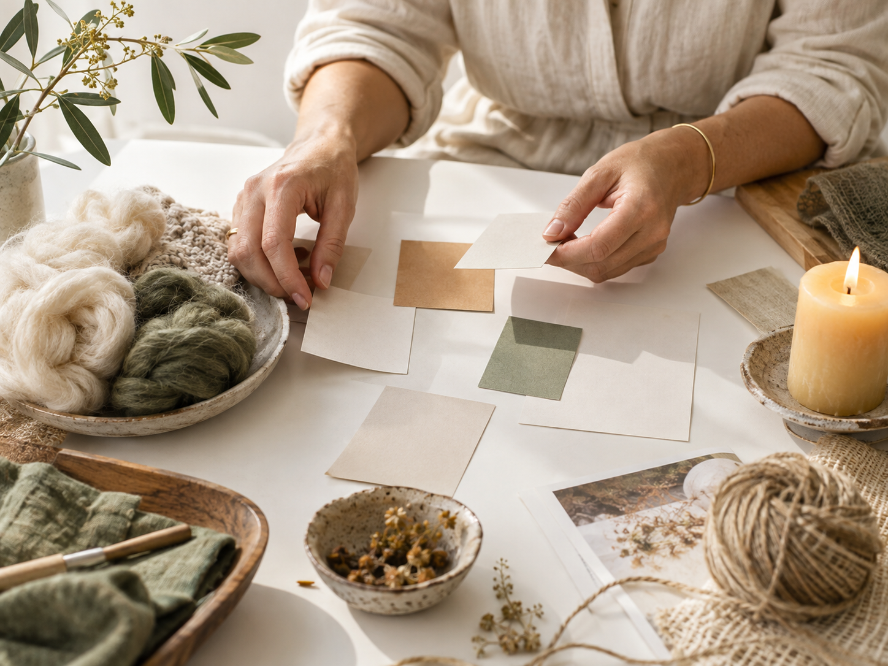

AI-стратегия для мастеров ручной работы
Для мастеров войлока, свечей, украшений и мыла в Европе: находим вашу суперсилу, понимаем покупателя и строим контент-стратегию через нейросети
Валяние из шерсти, изготовление кремов и духов — понимаю изнутри, с чем сталкиваются мастера, а не только в теории.

Кому это подходит
Вы умеете создавать красивые вещи. Теперь пора выстроить систему, которая поможет людям увидеть ценность вашей работы и выбирать именно вас
Вам не нужно становиться громче остальных. Вам нужна система, в которой вас увидят, поймут и выберут
Паспорт бренда
до 10 рабочих дней после получения всей необходимой информации
Паспорт бренда — 4 500 DKK за полный пакет